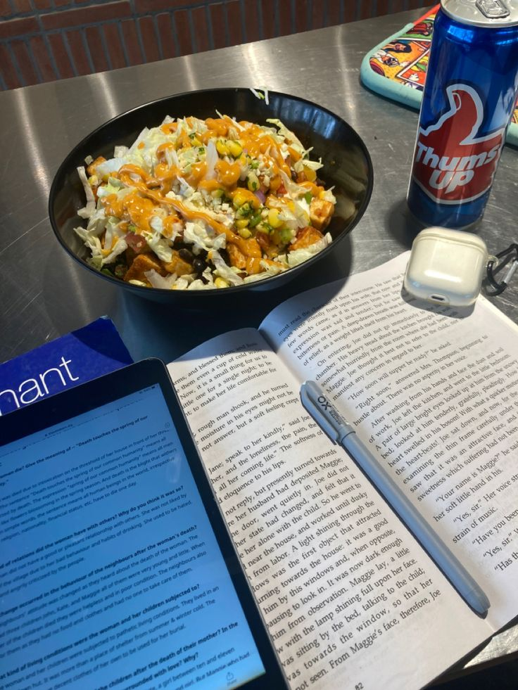

!Búscamos ayudar a estudiantes a encontrar comida saludable al mejor precio posible y sin perder tiempo! Todo esto para que se puedan concentrar en su día a día.

Pitch
¿Eres estudiante y te cuesta encontrar opciones de comida saludable? ¡Estás en el lugar correcto! Aquí encontrarás recetas, consejos y recursos para mantenerte alimentado de manera saludable mientras estudias.